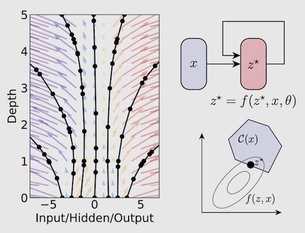
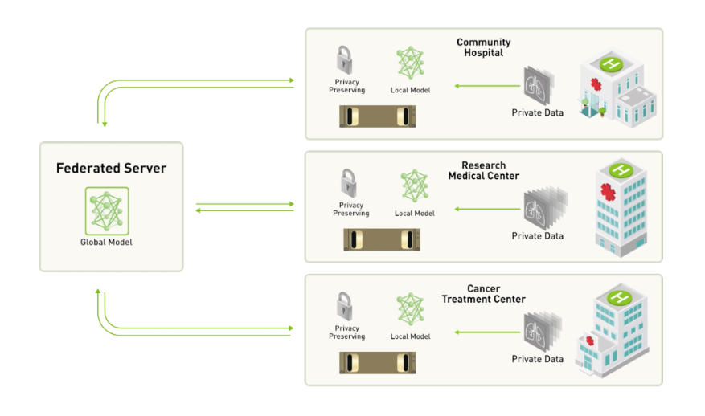
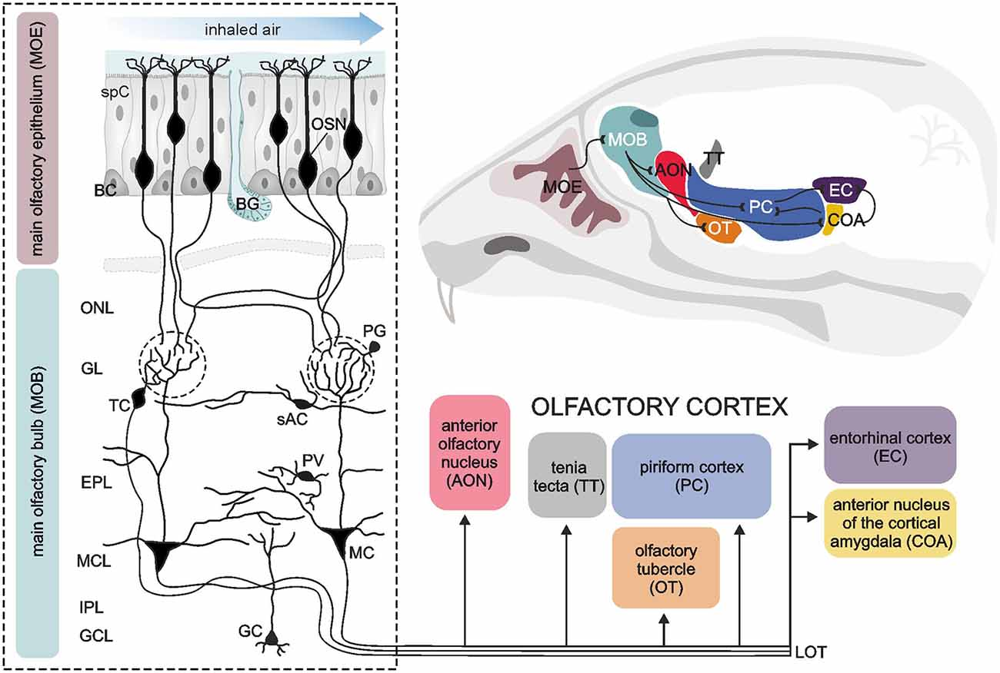

Machine Learning Projects Blog
Intrerpretable RL with Automated Scientific Discovery
Ideation phase.

Distributed Optimization with Control Theory and Fractional Calculus
In progress.

Housefly smell and Neuromorphic Computation
Concluded.

PPO with Adaptive Exploration
Concluded.